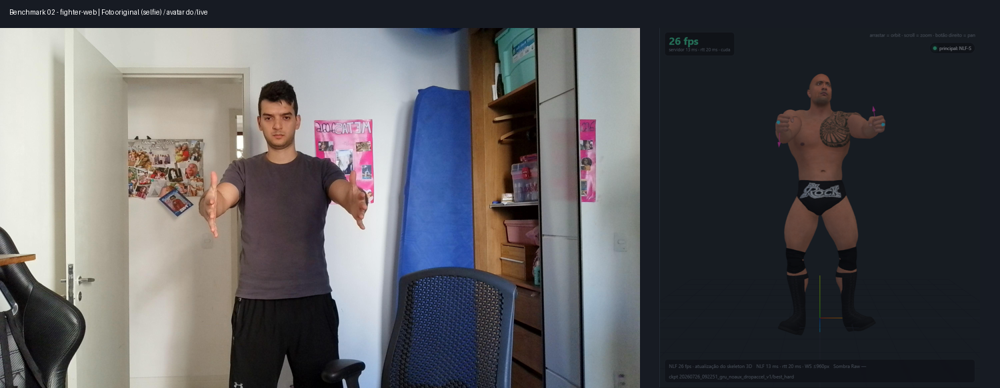
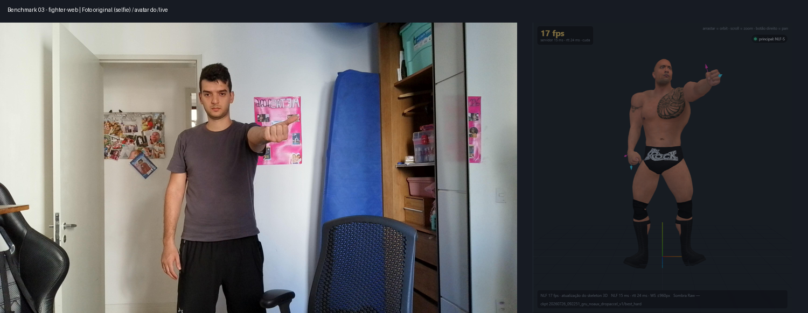
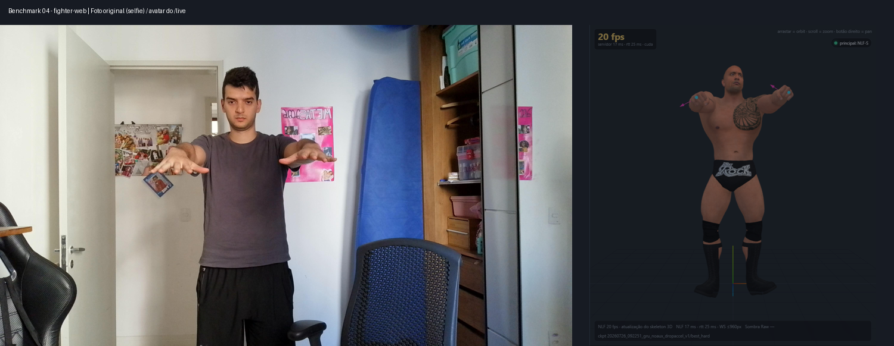
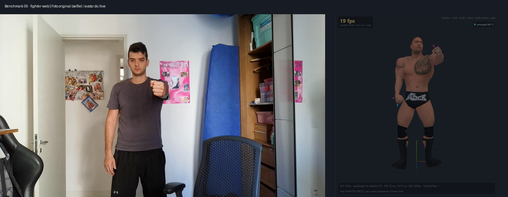
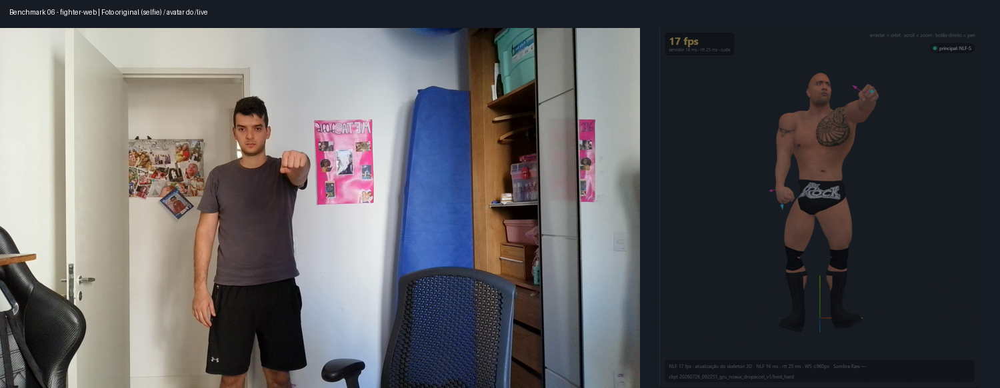

01_maos_abertas_ambas_palmas_cima
Direita: esperado cima | NLF lado_interno | avatar lado_interno · Esquerda: esperado cima | NLF lado_interno | avatar lado_interno
Confiança do rótulo: alta. Anexos [1, 7, 13].
18 anexos → 6 fotos únicas, rotuladas visualmente antes da inferência. Originais preservados em 4K. Fotos mantidas por 6 segundos na câmera simulada de 960×540, pelo caminho real /live → WebSocket → NLF-S (SMPL-X55) → Fighter Web. Capturas depois de 60 segundos de aquecimento na mesma conexão. Foto espelhada para coincidir com o modo selfie.
As classes usam o eixo dominante da normal da palma; não são uma medição de ângulo 3D ou de acurácia geral. A geometria do avatar é medida nas posições reais dos ossos dos dedos, sem usar os eixos-alvo do solver. Punhos fechados têm rótulos de confiança moderada. Cortes entre fotos não representam movimento humano.
Direita: esperado cima | NLF lado_interno | avatar lado_interno · Esquerda: esperado cima | NLF lado_interno | avatar lado_interno
Confiança do rótulo: alta. Anexos [1, 7, 13].
Direita: esperado lado_interno | NLF lado_interno | avatar lado_interno · Esquerda: esperado lado_interno | NLF lado_interno | avatar lado_interno

Confiança do rótulo: alta. Anexos [2, 8, 14].
Direita: esperado cima | NLF lado_interno | avatar lado_interno

Confiança do rótulo: moderada. Anexos [3, 9, 15].
Direita: esperado baixo | NLF baixo | avatar baixo · Esquerda: esperado baixo | NLF baixo | avatar baixo

Confiança do rótulo: alta. Anexos [4, 10, 16].
Direita: esperado lado_interno | NLF lado_interno | avatar lado_interno

Confiança do rótulo: moderada. Anexos [5, 11, 17].
Direita: esperado baixo | NLF baixo | avatar baixo

Confiança do rótulo: moderada. Anexos [6, 12, 18].